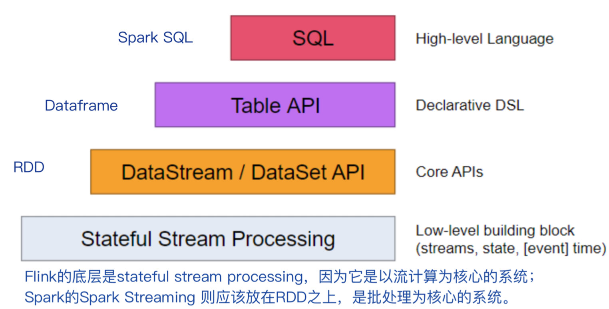
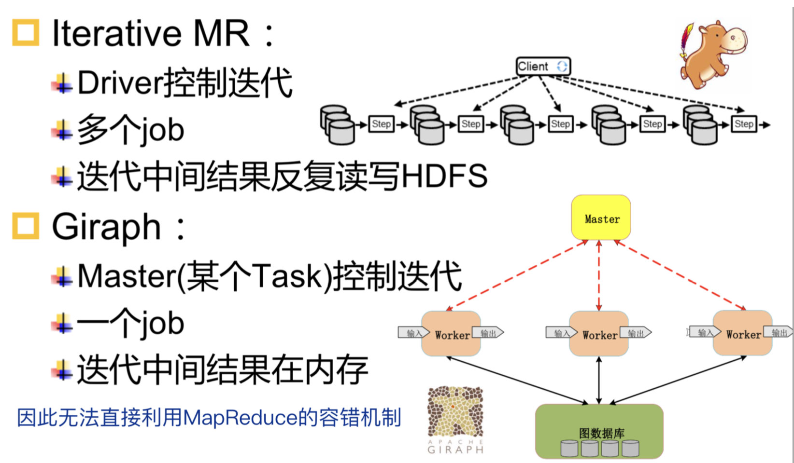

系统之间的比较
MapReduce VS Spark
- Spark增加了 join 等更多复杂的函数，可以串联为DAG，编程模型比MapReduce更灵活
- Spark基于DAG的任务调度执行机制，要优于Hadoop MapReduce的迭代执行机制，无依赖关系的任务之间可以同时进行运算
- MapReduce实际执行任务的是 TaskTracker 中的 task（进程），而 Spark 实际执行任务的是 worker --> Executor 中的task（线程）
- 本质区别
- 迭代
- Spark 提供了内存计算，整个迭代是作为一个 Job 运行的，可将迭代过程中的结果放到内存中，避免了从磁盘频繁读取数据
- MapReduce 每一个迭代期都是一个 Job，迭代的中间结果要存入HDFS，效率远远低于Spark
- 容错
- Spark 的容错通过 RDD 和 Lineage 实现
- MapReduce 的容错通过 Map 端落盘实现
- 迭代
批处理系统 VS 流处理系统
输入的数据不同
- 批处理的输入数据是批量的、静态的、完整的、有界的
- 流处理的输入数据是无界的、动态的、乱序、延迟
| 数据 | 需求 | |
|---|---|---|
| 批处理 | 静态、有限 | 非实时 |
| 流计算 | 动态、无限 | 实时 |
实现目标
- 批处理是对历史数据的挖掘
- 流处理是对实时数据价值的挖掘，要求的响应时间短
适用场景
- 批处理系统适合处理大批量数据、实时性要求不高的场景，应用数据量大volume
- 流计算系统适合处理快速产生的数据、实时性要求高的场景，但可能处理的数据量不大，应对数据产生速度快velocity
Spark VS Storm
- 批处理与流计算的区别：Spark最终会完成计算并结束运行，而Storm会持续处理消息，运行的结果时时改变
- Spark的RDD不知道schema，而Storm的tuple因为确定了topology是知道schema的
- ZooKeeper的使用
- Spark使用ZooKeeper选主，但也可以不用
- Storm一定需要ZooKeeper，负责Nimbus和Supervisor之间的所有协调工作
- 消息传递机制
- MapReduce和Spark的shuffle阶段存在阻塞，数据传输是成块进行的
- Storm一次一记录，Tuple处理完即可发送，无阻塞，符合实时计算要求
Storm VS Spark Streaming
- Storm is continous executor，而Spark Streaming是将continous data转化为了batch进行操作
Flink VS Spark v2
Runtime engineer
- Flink 引擎处理 Streaming Dataflow，natively support streaming processing
- Spark v2 引擎处理 Batch Dataflow，强制将streaming转换为了batches
架构

相同之处：批流融合都采用了流向表转换的思路，Flink将流转变为Dynamic Table，Spark v2将流转变为Unbounded Table
MapReduce vs Giraph
- 使用MapReduce等分布式数据处理系统进行图计算，编写程序复杂，且丢失了图结构信息和特性，大量迭代计算麻烦，没有将图看成是图，只知道迭代的过程，而非图计算，看待KMeans和PageRank是相同的
- MapReduce系统没有针对迭代进行优化，每次迭代都要落盘，增加了I/O开销，虽然Spark/Flink没有这个开销
- MapReduce每次都会更新所有的节点，造成资源的浪费，导致的原因：key-value转换之后将图看成了普通的k-v键值对，没有图信息，也就没有办法优化；Spark同样无法识别图，RDD全部参与运算；Flink可以做增量迭代
- Giraph实现了迭代优化、增量迭代，并且其编程方便
- Pregel将PageRank处理对象看成连通图，而MapReduce则将其看成是键值对
- Pregel将计算细化到顶点，可在顶点内控制循环迭代次数，而MapReduce则将计算批量化处理，按作业进行循环迭代控制，一系列的MapReduce调用需要反复读写HDFS

Giraph vs MapReduce Hama
- Giraph利用了MapReduce的框架来启动task，但是不是基于MapReduce API计算，即其没有使用Map/Reduce两个操作算子
- MapReduce Hama利用了MapReduce的API实现计算，就是在MapReduce上实现了一套图算法程序
体系结构的异同
| MapReduce | Spark | Storm | Flink | |
|---|---|---|---|---|
| 应用名称 | Job | Job/DAG | Topology | Job |
| JobTracker | Master | Nimbus | JobManager | |
| 系统角色 | TaskTracker | Worker | Supervisor | TaskManager |
| Task进程 | Executor | Worker | Task线程 | |
| TaskSet（Task线程） | Executor（Task线程） | |||
| 组件接口 | Map/Reduce | RDD API | Spout/Bolt |
- Task 进程 VS 线程
- 线程好，更加轻量级，减少任务的启动开销
- 多核 => 多线程，充分利用硬件资源
工作流程的异同
数据传输方式
- MapReduce、Spark批处理：阻塞式传递数据，数据从下往上传递
- Storm流处理：火山式模型（open - next - close），一次一记录
- Flink批流融合：火山式模型，从上往下拉取数据，但是一次一个vector，即多个tuple
| 引擎 | Blocking | Pipelined |
|---|---|---|
| MapReduce | Yes | No |
| Spark | Stage之间 | Stage内部 |
| Storm | No | Yes |
| Flink | Pipeline Breaker | Yes |
迭代处理方式
- MapReduce：由用户程序显式while\for编写迭代，很多个不同的job，每次迭代结束写在HDFS上，容错方式和普通的算子一致
- Spark：由用户程序显式while\for编写迭代，相较于MapReduce改进，每一次迭代的中间结果存在内存。容错方式和普通的算子一致
- Flink：迭代是系统内置的函数，系统可以优化迭代的过程，因此也需要系统来负责容错
容错机制
- 非迭代算子：批处理、流计算的容错机制一样
- 迭代算子：两者语义不同，批处理迭代没有完成前没有结果输出，而流计算每次迭代均有结果输出，因此容错机制有所差别